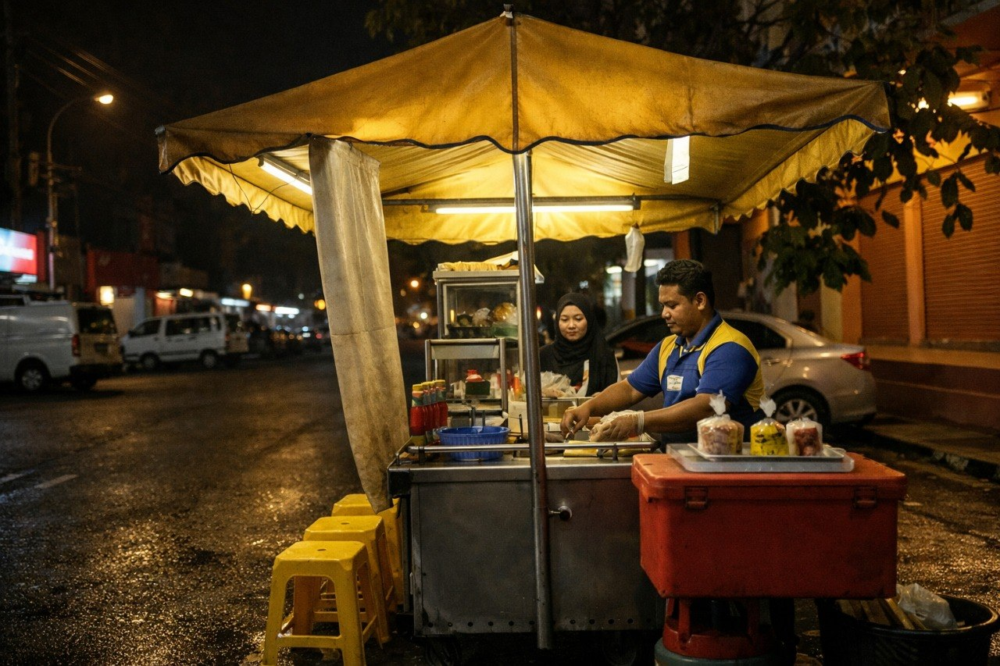
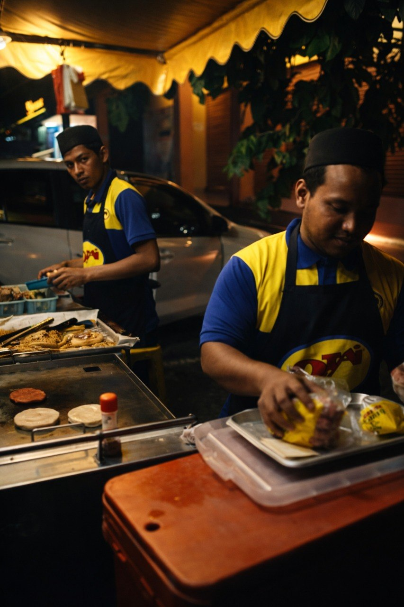
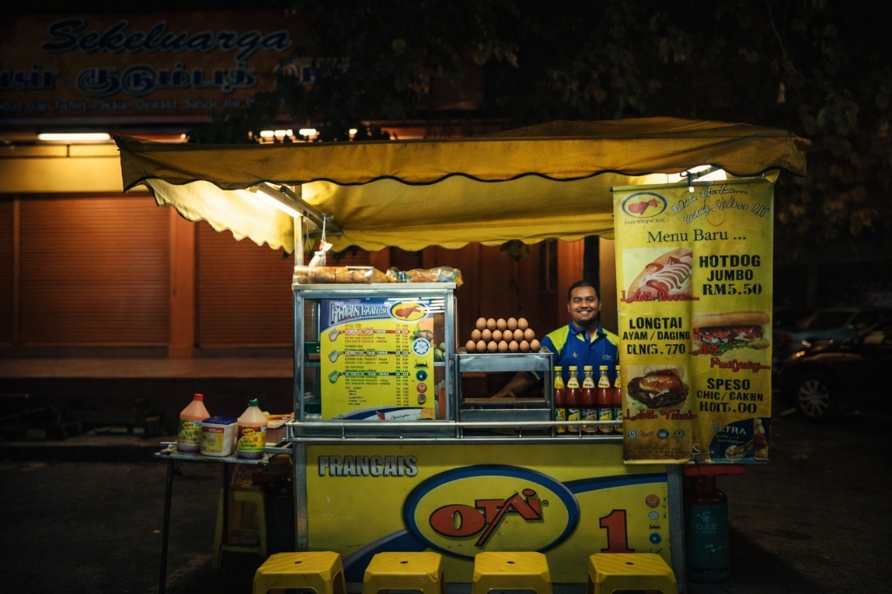

ABOUT ABANG BURGER MIDNIGHT
Abang Burger Midnight represents hard work, consistency, and passion in the food industry. Founded by Abdul Muzry Bin Abd Jalil from Parit Buntar, Perak, the business started in 2019 at Sri Damansara, Kuala Lumpur before expanding to Perak and currently operating in Padang Besar, Perlis.

Started In KL
The burger business journey began in Sri Damansara, Kuala Lumpur in 2019.
Since 2019

Known for late-night burger service, Abdul Muzry continues serving the local community with affordable and quality food. His entrepreneurial journey reflects dedication, perseverance, and strong commitment towards customer satisfaction and food excellence.

SSM Certified
Officially registered with SSM and certified in food handling & hygiene.
Trusted Service